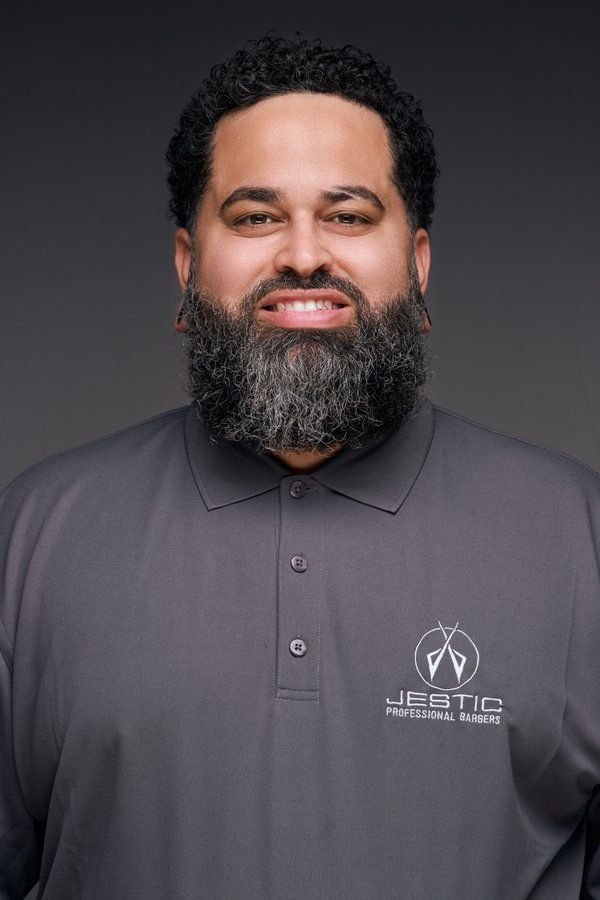
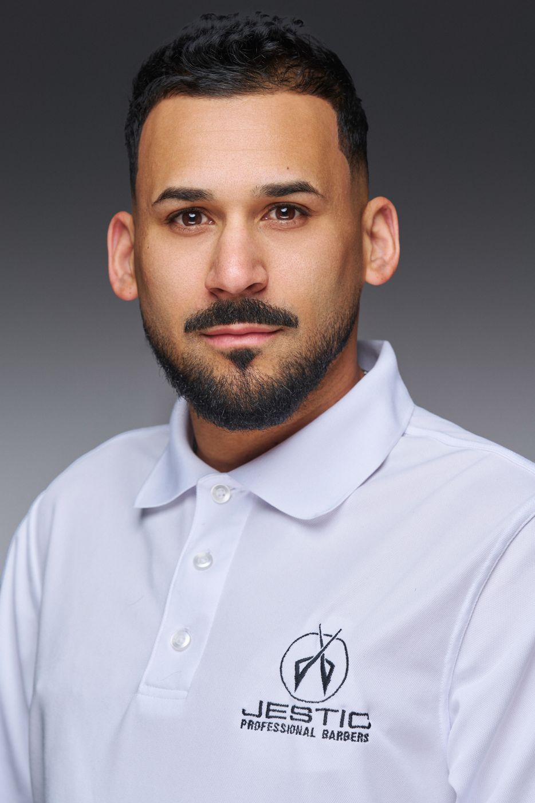

Fotos profesionales y headshots · Orlando, FL
Una foto que abre puertas.
Fotos profesionales en Orlando para LinkedIn, tu empresa, tu negocio o tu perfil de actor. Te dirijo en español en cada pose, así que no necesitas saber posar, y el retoque es natural: sigues siendo tú.

Por qué importa
Tu foto llega antes que tú.
Un reclutador, un cliente nuevo o un director de casting ve tu foto antes de leer una sola palabra sobre ti. Una foto oscura, recortada de una fiesta o de hace diez años hace que duden. Una foto profesional dice que te tomas en serio tu trabajo.
Si estás buscando trabajo, cambiando de carrera o empezando tu propio negocio en Orlando, es una de las mejoras más rápidas que puedes hacer.
Fotos recientes
Profesionales de todo tipo. Nadie se ve tieso.


 La elegida
La elegida




Para cada profesión
¿Para qué la necesitas?
LinkedIn y empleo
Una foto clara y cercana para buscar trabajo o crecer en tu carrera.
Realtors y seguros
Para tus tarjetas, letreros, anuncios y tu perfil en las plataformas.
Abogados y salud
Fotos que transmiten confianza para tu web y tus directorios profesionales.
Actores
Un look comercial y uno teatral, con retoque natural para casting.
Equipos completos
Fotos iguales para toda la empresa, tomadas en tu oficina.
Qué ponerte
Lo simple funciona.
- Colores sólidosSí
- Saco o blazer que te quede bienSí
- Una segunda blusa o camisaTráela
- Logos y estampados llamativosEvítalos
- Maquillaje y peinadoOpcional
Precio
Pide tu cotización.
El precio depende de cuántas personas y cuántos looks necesitas. Cuéntame en una llamada rápida y te mando la cotización en menos de 24 horas. ¿Necesitas más fotos para tu negocio? Mira la sesión de marca personal.
Reseñas en Google · 5.0 ★
Clientes sobre sus fotos.
“Mis headshots quedaron hermosos y estoy muy emocionada de volver a reservar. Gerson fue sumamente profesional y dio instrucciones claras para lograr las fotos perfectas.”
“Me encantan mis fotos profesionales. Gerson fue puntual, profesional y sabe cómo lograr las mejores tomas. ¡Lo recomiendo muchísimo!”
Reseñas originales en inglés, traducidas al español. Lee todas las reseñas en Google →
Preguntas frecuentes
Lo que más me preguntan.
¿Qué es un headshot?
Es una foto profesional de los hombros hacia arriba, con buena luz y un fondo limpio. Es la foto que usas en LinkedIn, en la web de tu empresa, en tu tarjeta de presentación y en tus perfiles.
No sé posar. ¿Es un problema?
Para nada. Casi nadie sabe. Te digo exactamente cómo pararte, dónde poner las manos y hacia dónde mirar, y te enseño las fotos durante la sesión para que veas cómo van saliendo.
¿Cuánto dura la sesión?
Una sesión individual suele tomar menos de una hora. Si quieres varios looks o fondos, o si es un equipo completo, lo planeamos en la llamada.
¿Qué ropa me pongo?
Colores sólidos, un saco o blazer que te quede bien y una segunda opción para variar. Evita logos y estampados llamativos.
¿Van a la oficina para fotos de todo el equipo?
Sí. Monto el estudio en tu oficina o negocio, y todo el equipo sale con la misma luz y el mismo fondo, sin que nadie pierda el día.
¿Cuánto cuesta?
Depende de cuántas personas y cuántos looks necesitas. Cuéntame en una llamada rápida y te mando la cotización en menos de 24 horas.
Siguiente paso